Hannes Keunen, Maarten Wijnants and Jori Liesenborgs
Neural video representations (NVRs) achieve competitive compression performance compared to traditional video codecs by overfitting compact neural networks to individual video sequences. However, the primary limitation of the NVR approach is that it suffers from low encoding speeds. FastNeRV, a recent hypernetwork-based approach, accelerates encoding by generating NVR parameters directly from the video frames, yet at the expense of limited compression efficiency. This work introduces a two-stage training process that combines offline hypernetwork training (cf. FastNeRV) with online overfitting (cf. traditional NVR). Additionally, we improve the compression performance of FastNeRV by applying learned quantization parameters and entropy models to jointly optimize the trade-off between bitrate and reconstruction quality. We also introduce channel-aligned weight tokens that preserve the structure of convolution filters when generating network parameters. Experimental results on the UVG dataset show that our method outperforms FastNeRV and NVR baselines in terms of rate-distortion performance, while offering a flexible trade-off between encoding speed and compression efficiency. In this way, our method helps close the competitive gap between NVR- and autoencoder-based video codecs in the domain of learned video compression.
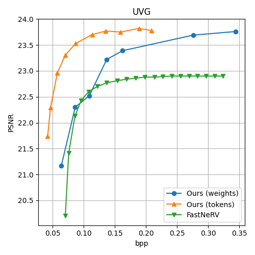
(a)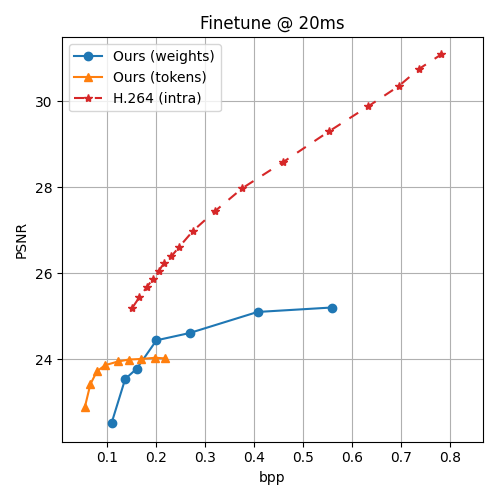
(b)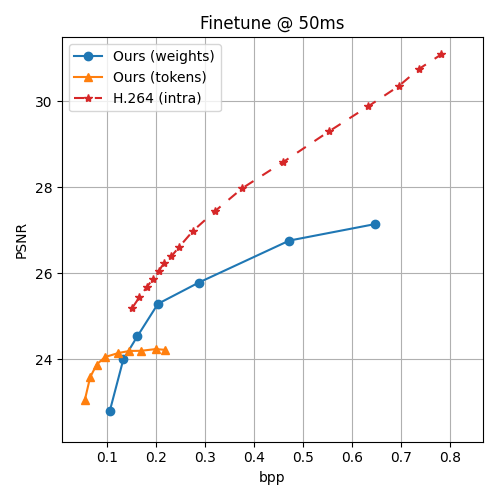
(c)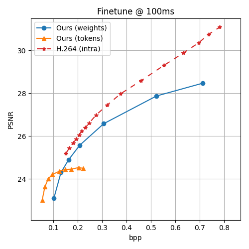
(d)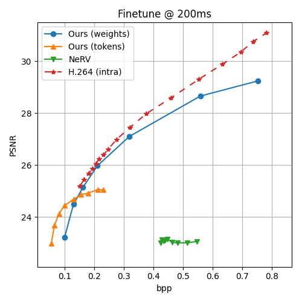
(e)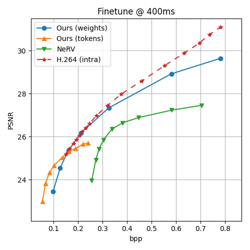
(f)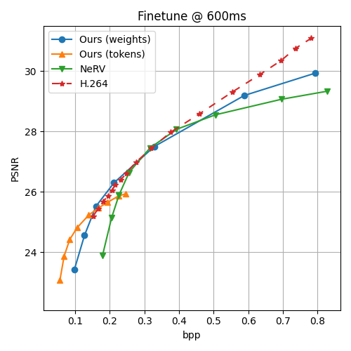
(g)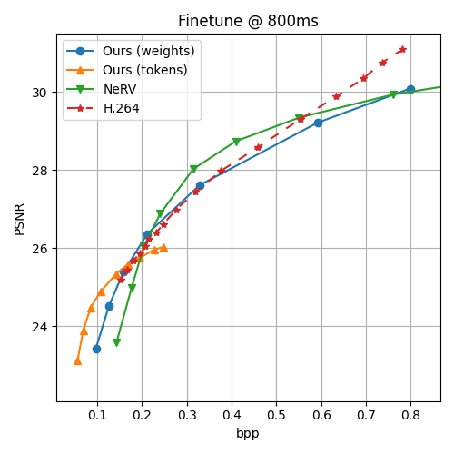
(h)Fig. 4: (a) Compression performance of our model vs. FastNeRV with predefined quantization parameters on the UVG dataset. (b-h) Comparison of token compression, weight compression, NeRV, and H.264 (I-frames only) at 20 milliseconds (50 FPS), 50 milliseconds (20 FPS), 100 milliseconds (10 FPS), 200 milliseconds (5 FPS), 400 milliseconds (2.5 FPS), 600 milliseconds (1.67 FPS), and 800 milliseconds (1.25 FPS) per frame, respectively.
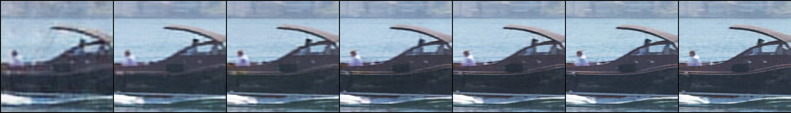
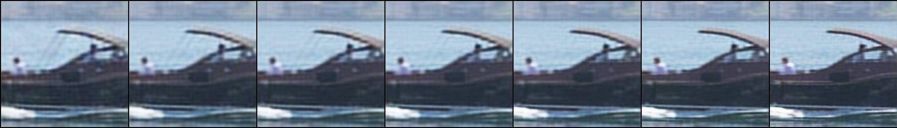
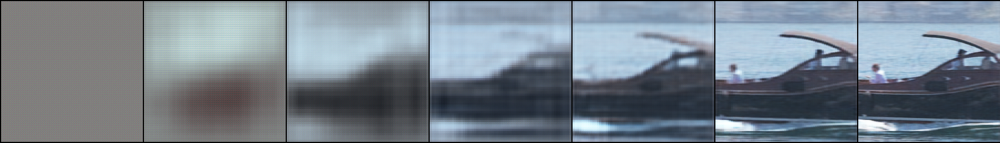
Fig. 6: Example frames after finetuning with λ = 0.1 for (left to right) 0, 50, 100, 200, 400, 1000, and 3000 frames respectively, with weight compression (top), token compression (middle), and NeRV (bottom).
This paper has been accepted for publication at IEEE MMSP 2026.
For questions or collaborations, please contact me at hannes.keunen@uhasselt.be.